Monica Munoz[home]
Mod and Tesselation
Phase 1- group work
We worked as a group to make tesselations
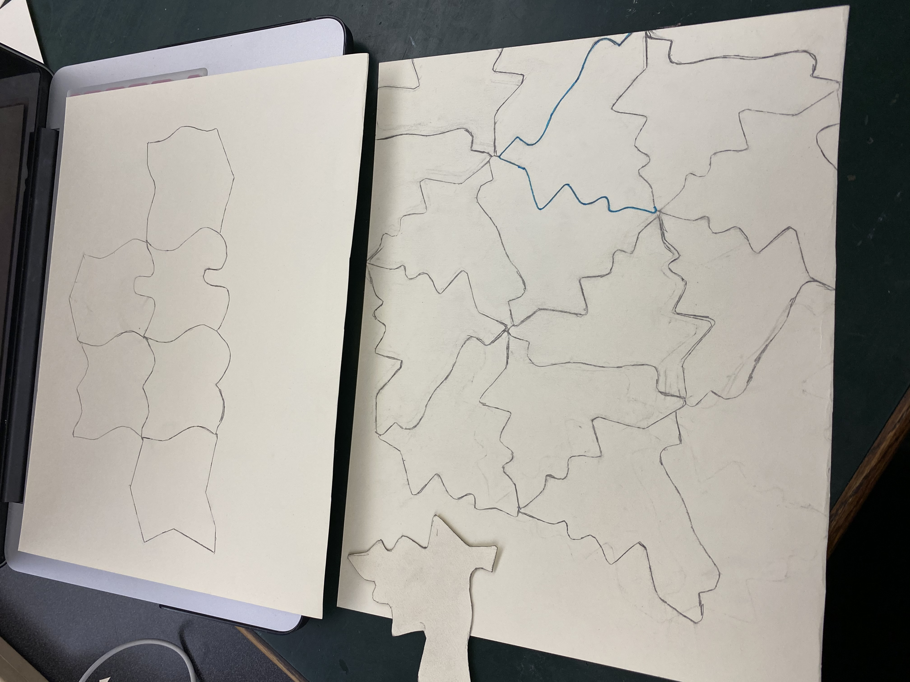

Phase 2
We made more shapes and then laser cut in acrylic, wood and paper
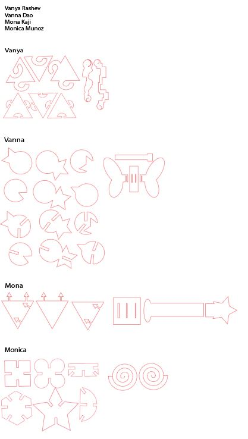
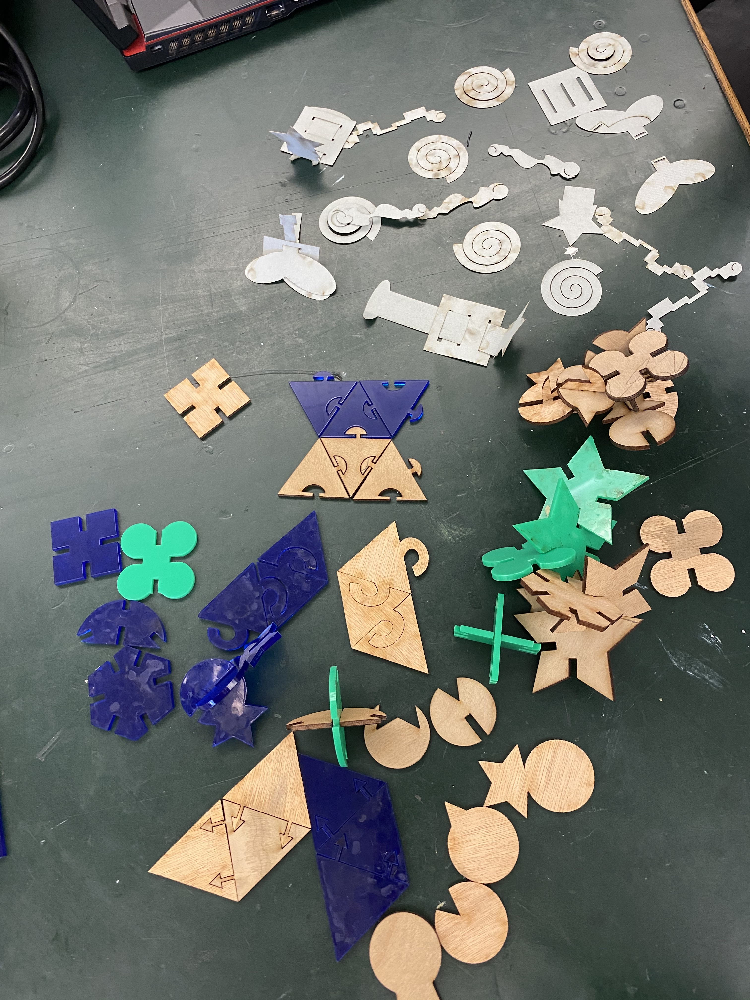
Monster Mash
Schema and prints
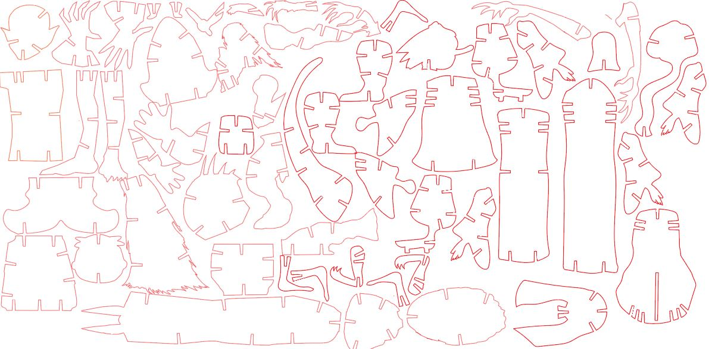
For our group project, we decided to do a Monster Mash. Each person chose five monsters that are known in their culture. Since I come from a Mexican background, I decided to choose the very well known Chupacabras, La llorona, El duende,El Cucuy, and Siguanaba. The goal of the project was to combine the pieces to create a new monster. Thus we would be able to combine monsters known in our cultures. We also added red boxes with a black strip line to place the monsters inside. The reason we chose red is because its a common color for each of our cultures flags. Each box is considered a mystery pack.
My pieces are in green wood with a few in clear acrylic

 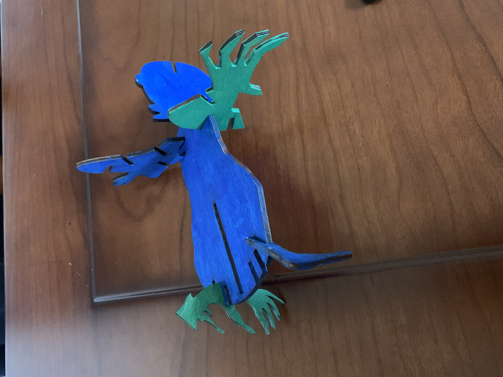
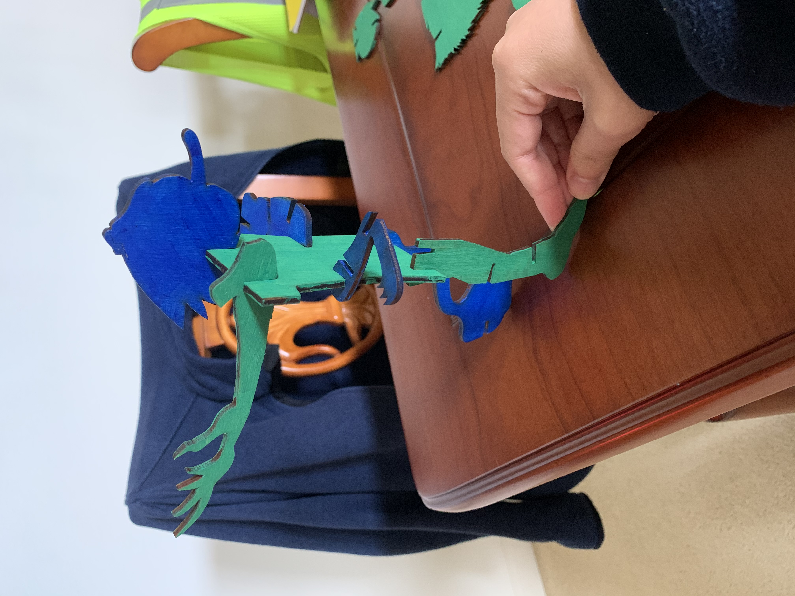
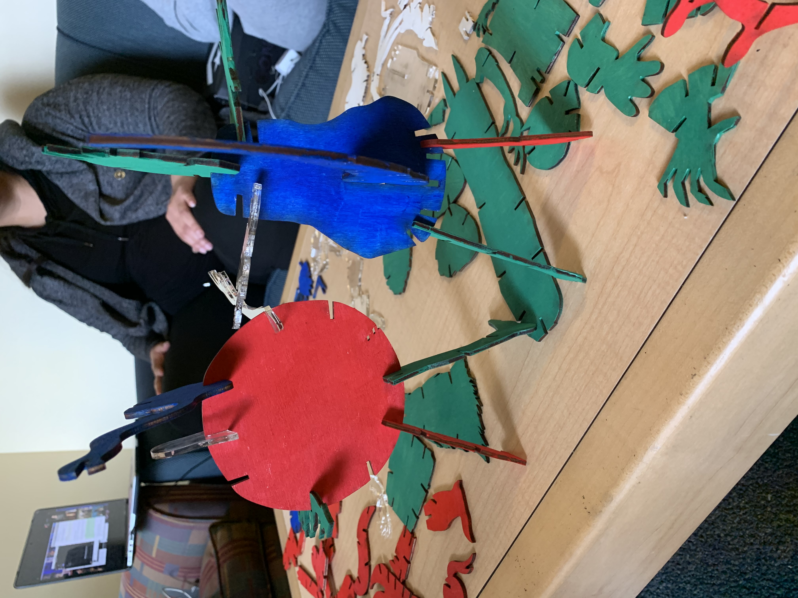
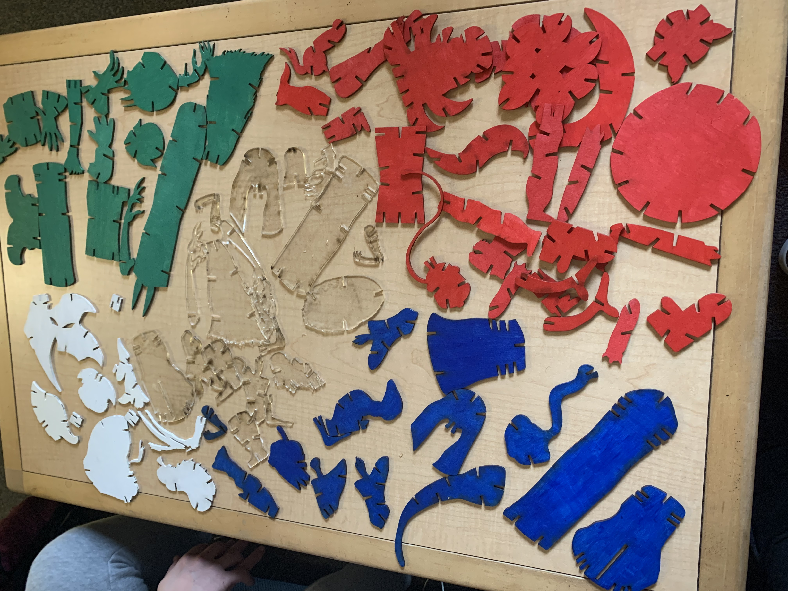
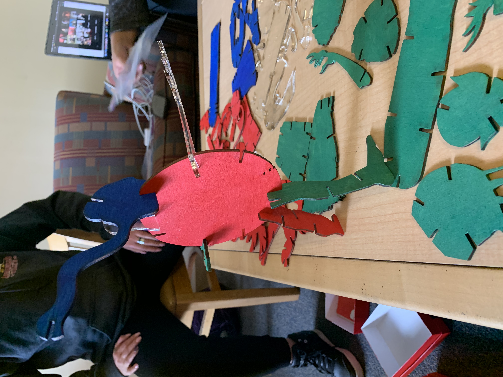
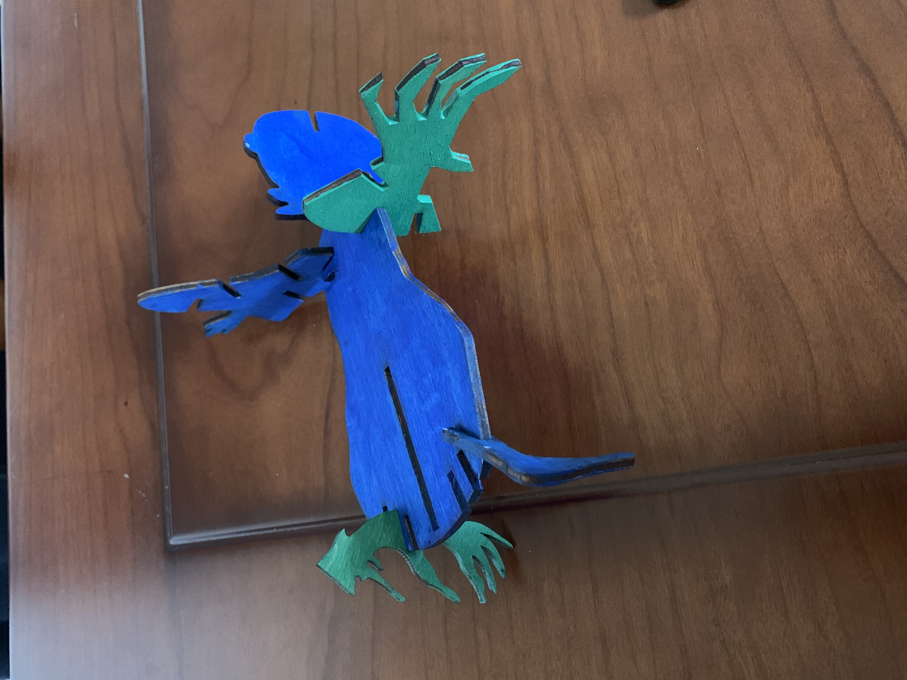
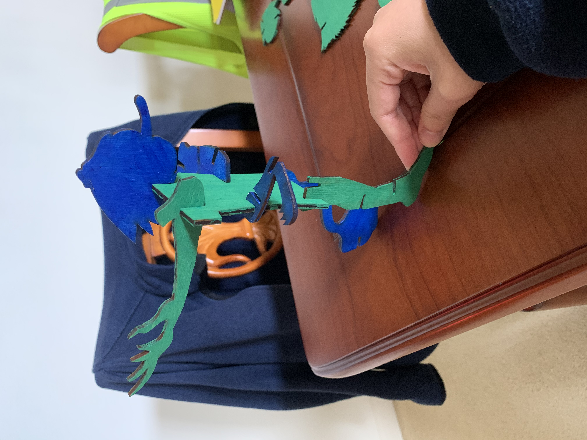
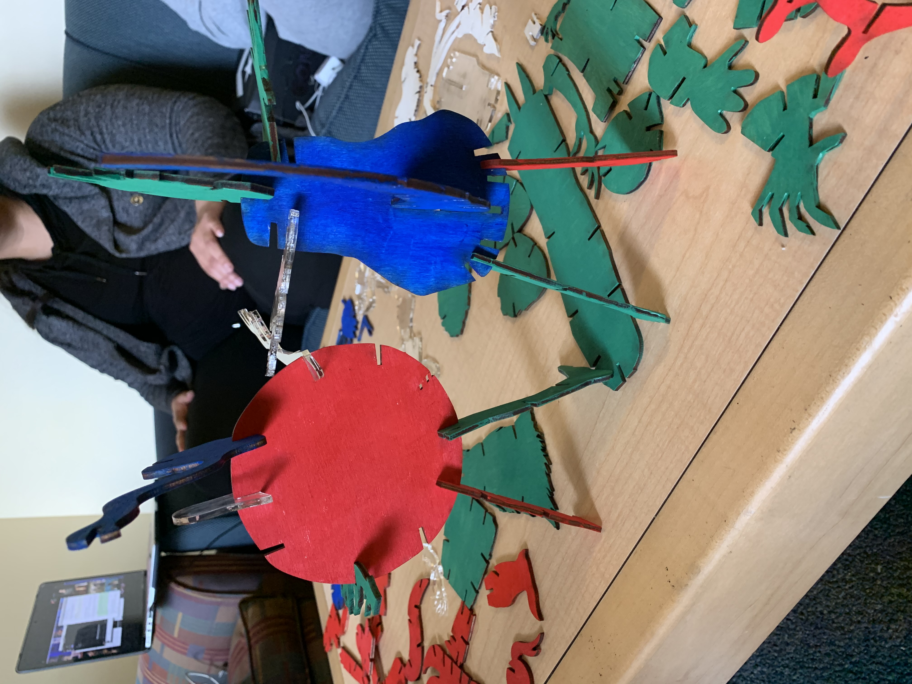
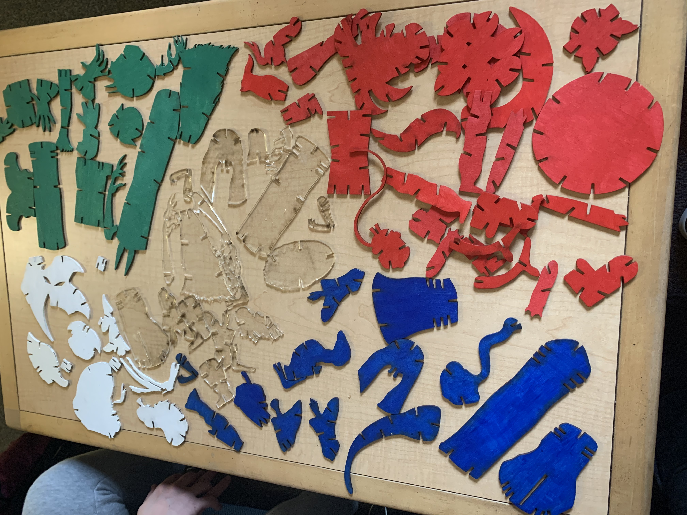
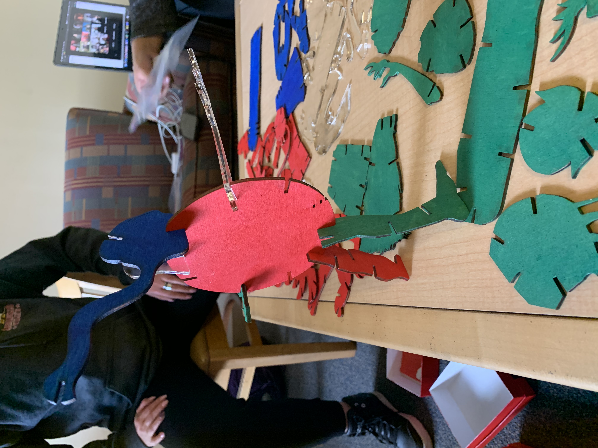